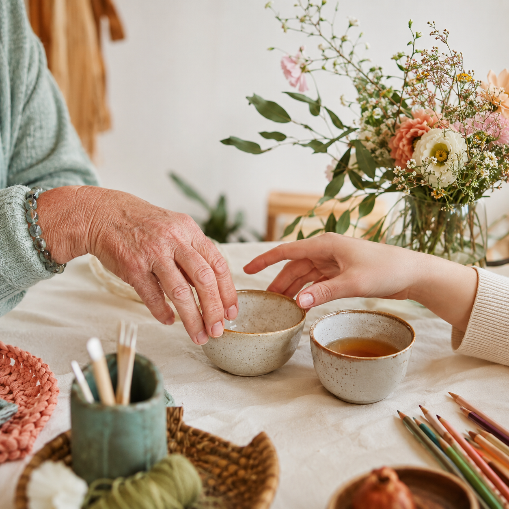
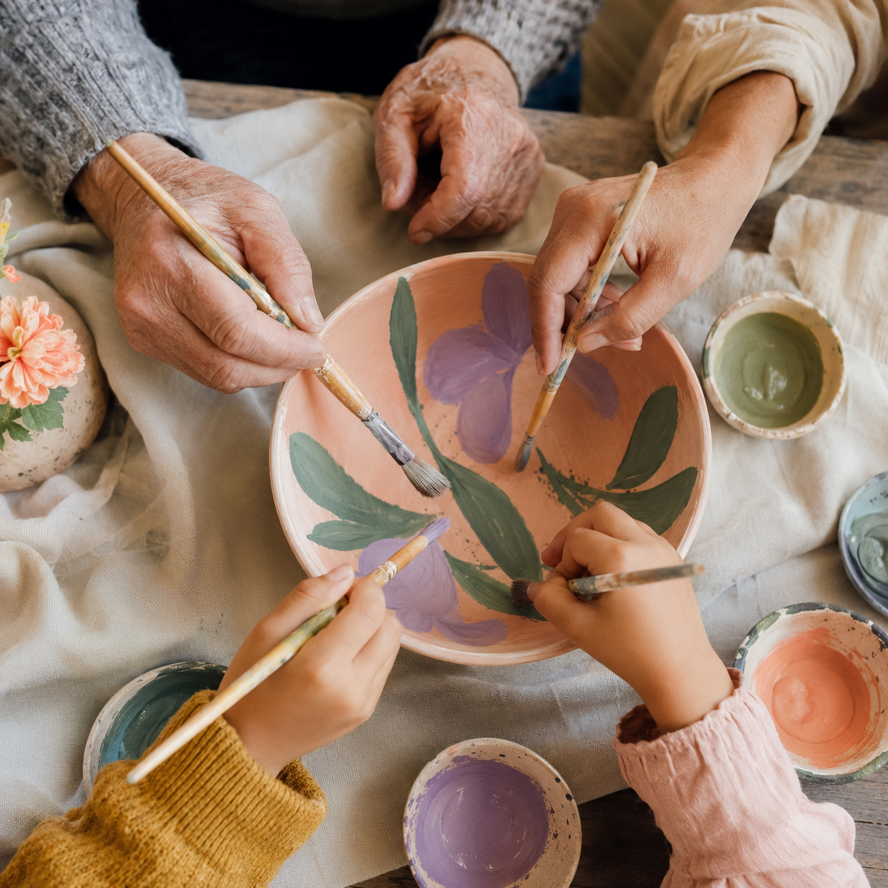
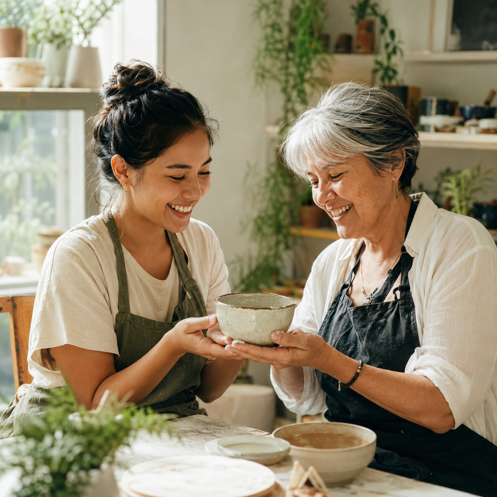
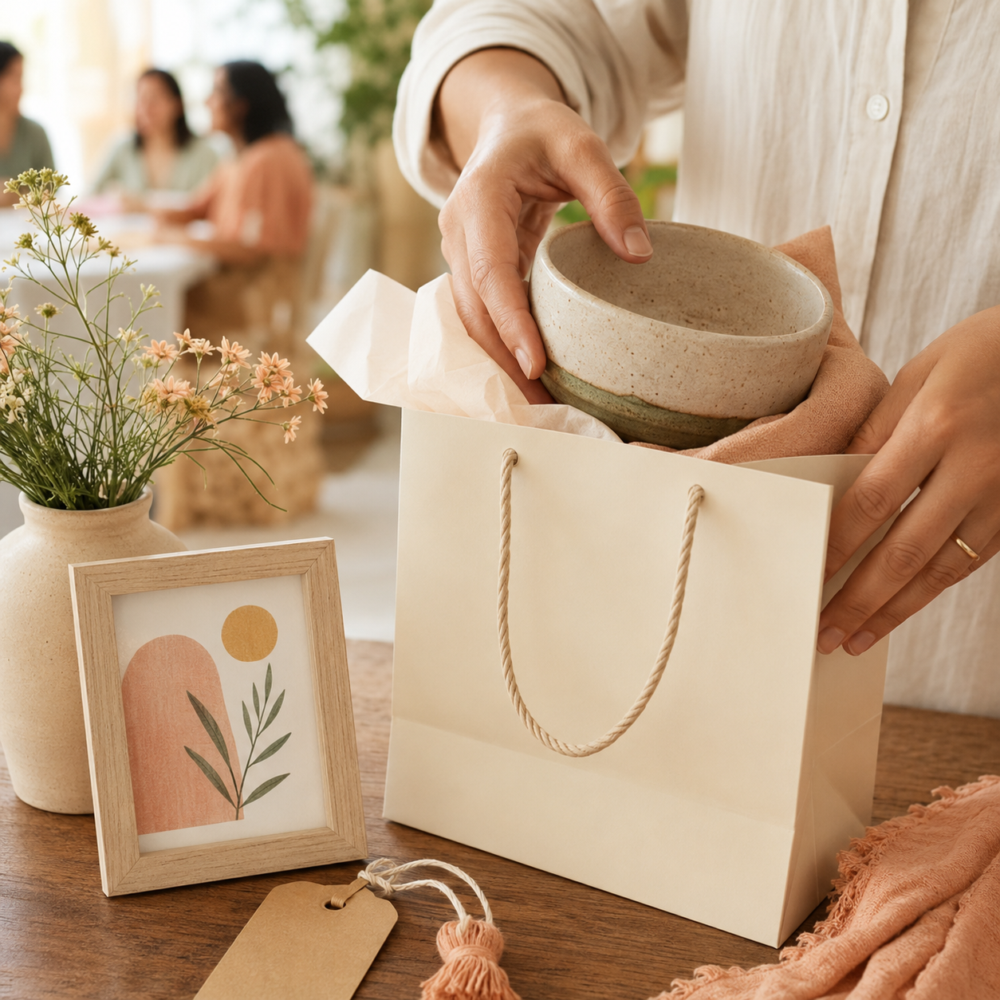

01 · מתחילים להכיר
מפגש קטן, התחלה גדולה.
מגיעים כמו שאנחנו: עם סקרנות, כוס תה, שאלה אחת או חיוך. אין צורך להכיר מראש או לדעת „מה להגיד" - היצירה פותחת את השיחה בקצב טבעי ונעים.
קרוסלת תוכן · שלב העניין
הקרוסלה מסבירה את הרעיון שמאחורי „נפגשים באמצע": מפגש שמתחיל בסקרנות, נבנה מתוך עשייה משותפת והופך לקשר שיש לו מקום גם מחוץ לשולחן היצירה.

מגיעים כמו שאנחנו: עם סקרנות, כוס תה, שאלה אחת או חיוך. אין צורך להכיר מראש או לדעת „מה להגיד" - היצירה פותחת את השיחה בקצב טבעי ונעים.

צבע, חימר, עץ ורעיונות הופכים לעשייה משותפת. לא מדובר ב„נותנים" מול „מקבלים", אלא באנשים שמביאים ניסיון, דמיון ונוכחות - ויוצרים משהו שאף אחד לא היה יוצר לבד.

כשעובדים יחד נוצר זיכרון משותף, ובעקבותיו גם תחושת שייכות. המפגש הופך למקום קבוע בלוח השנה - מקום שבו מחכים לך, רואים אותך ושמחים במה שהבאת.

אפשר להשתתף, להתנדב, לשתף או לרכוש תוצר חברתי. כל פעולה קטנה מחזקת את המעגל ומאפשרת לעוד אנשים להיפגש, ליצור ולהרגיש חלק.
לחנות החברתית ←שעתיים של יצירה יכולות להפוך להיכרות חדשה, לשגרה טובה יותר ולקהילה שמרגישה כמו בית.
אני רוצה להצטרף למפגש